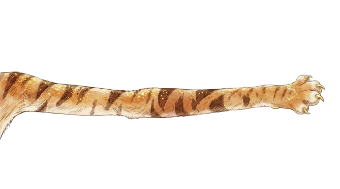
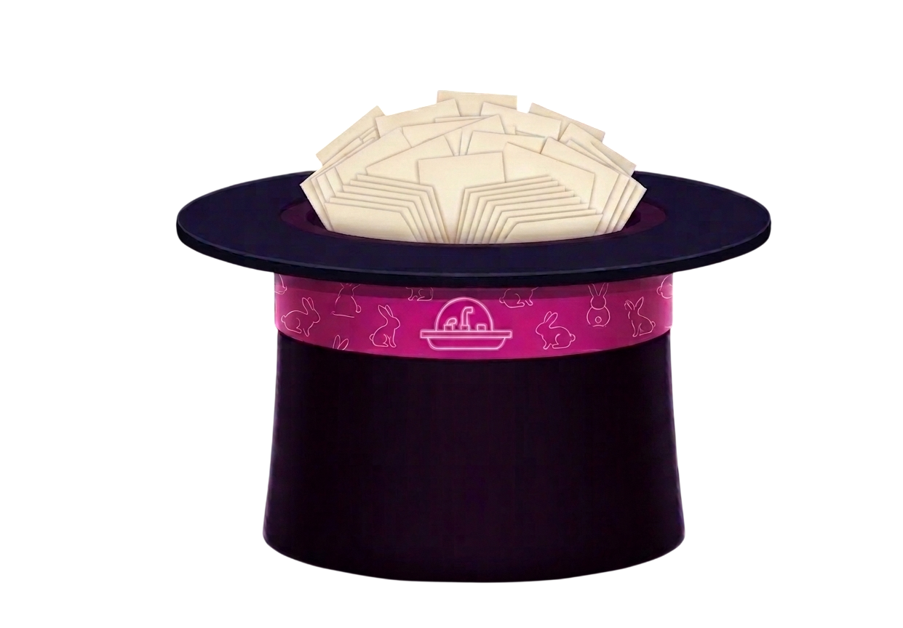

The Hat
Mika Glo
— slips remaining


tap to pull
No slips in this category
All
Companies
People
Artists
Science
Inventions
Useful
Food
History
Movements
Education
≡
Companies
Story Name
tap to reveal
read more ↓
Episode
View Profile →
✓ Used
Return
Bold
⌘B
Italic
⌘I
Underline
⌘U
Bullet List
Numbered List
Copy
⌘C
Paste
⌘V
✏ Edit
📌
✕
Name
Short Hook
Full Hook
Category
Used In
Hook
Full Story
Depth
Quick Hit
Medium
Deep Dive
Stream Flag
Prep Notes
Research Links
+ Add
Research Log
B
I
U
•
1.
↩
+ Add
Oldest ↑
Export
Save
The Hat
✕
Add Story
+
Name
Short Hook — one punchy line
Full Hook — optional detail
Category
Companies
People
Artists
Science
Inventions
Education
Useful Things
Food
History
Movements
New Category
+ Add
Research Link — optional
Prep Notes — optional
Add to Hat
Session
+
↺ Reset Session — Put All Back
↓ Download All Stories
Used —
0
+
Active —
0
+
×